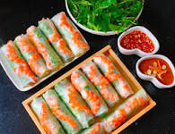

Gỏi Cuốn

Description
Gỏi Cuốn, or Spring Rolls, are a famous dish found in Vietnam.
There are many ways to make these Spring Rolls,
and you can get creative with what you decide to put inside the rolled-up rice paper.
This recipe will use shrimp as its protein and a basic fish sauce, Nuốc Mắm, for dipping.
Ingredients
- Rice paper
- Shrimp
- Your favorite vegetables
- Fish sauce
- Black vinegar
- Sugar
- Chilli peppers
- Garlic
- Quất, or some type of citrus
Steps
- Boil your shrimp.
- While your shrimp is boiling, prep and cut your desired vegetables. My favorites are lettuce, cucumbers, konegi, pakuchi, shiso/oba.
- When your shrimp have boiled, deshell them and cut into halves.
- Cut your chilli peppers and garlic, or mash with a mortar-and-pestal - if you're feeling fancy.
- Mix the chilli peppers and garlic together with a mixture of fish sauce, black vinegar, sugar, and your choice of squeezed citrus juice. Ask my wife, Linh, what the proper ratio is.
- Roll up the shrimp and veggies into the rice paper.
- Dunk your rolled up goodness into the sauce and enjoy!